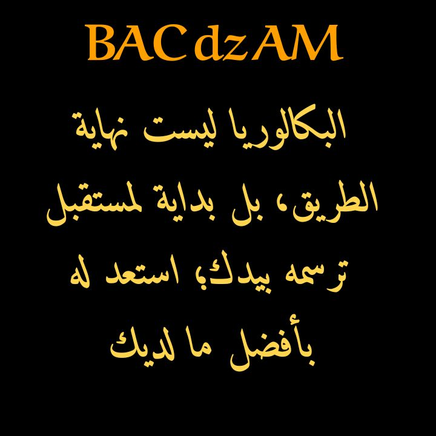
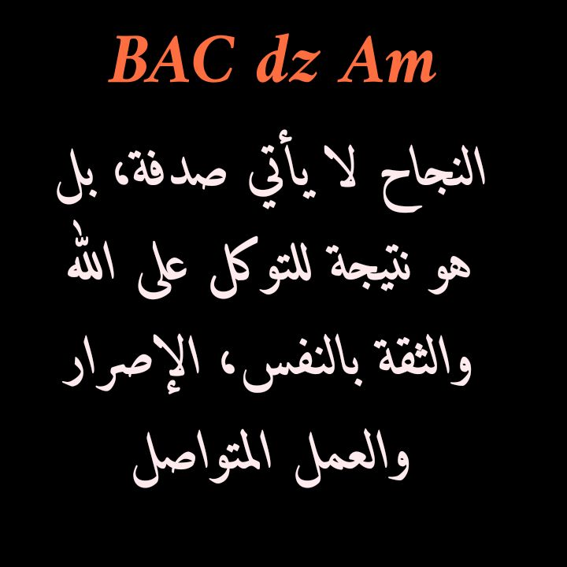
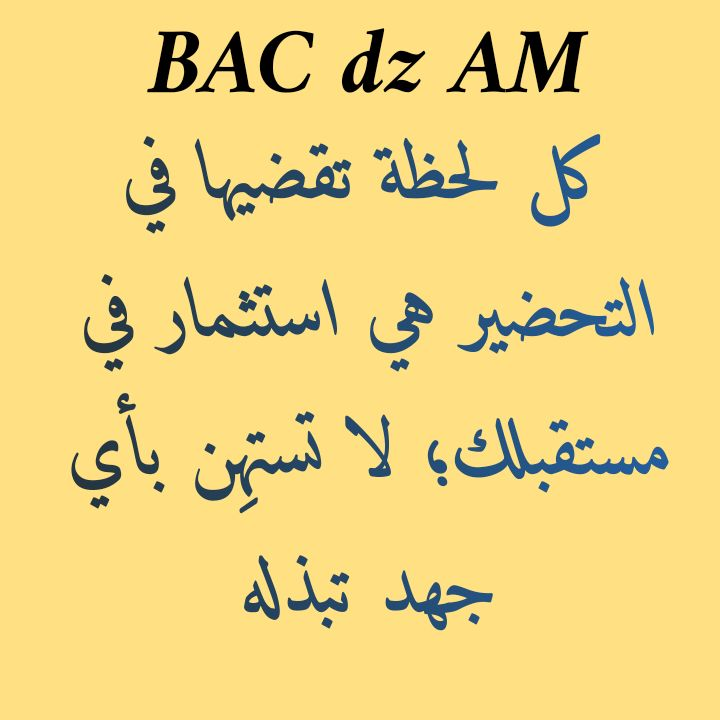
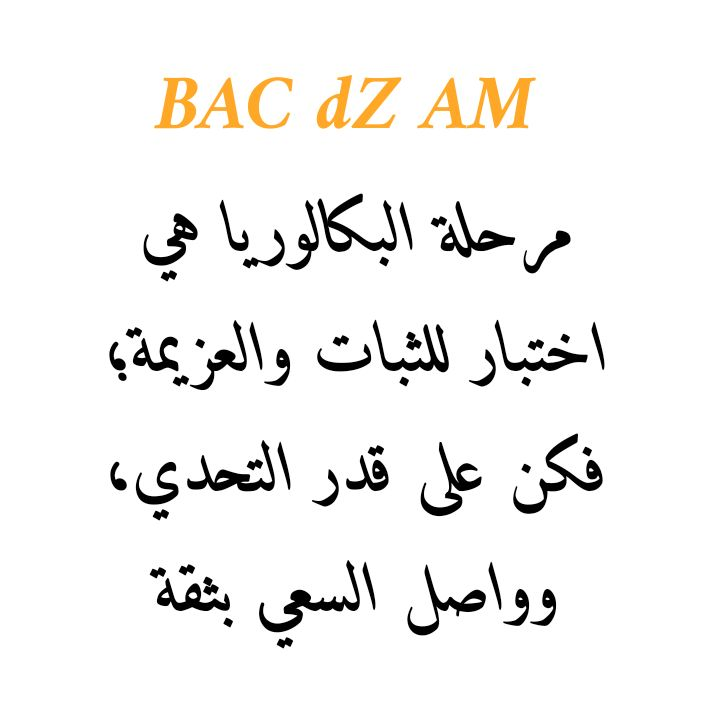
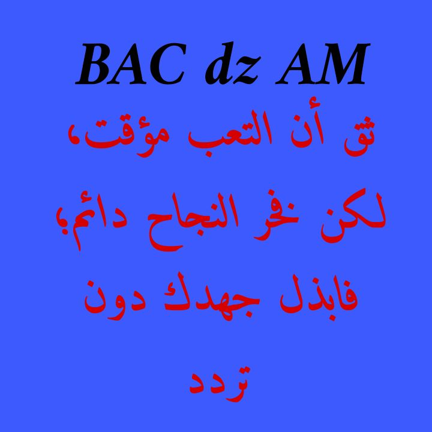

في بعض الأحيان نحتاج بعص التحفيز لشد الهمم وإكمال التقدم نحو القمم
🎥 مقاطع تحفيزية
متصفحك لا يدعم تشغيل الفيديو.
📸 صور تحفيزية
    
توكل علر رب العباد
واتخذ من الأسباب
ما يوصلك للباب
فتقرع
فتفوز بدنيا واخرة العباد